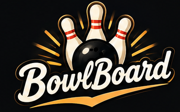

Free while in development
Built for Bowlers.
Every game. Every session. Your bowling history.
Track a game pin-by-pin, snap a photo of the lane screen, or just record the final score. BowlBoard keeps your history organized and turns it into stats and insights that actually help you understand your game.
No account needed. Your games stay on your device.

Snap it. BowlBoard reads it.
Your bowling center already has the score. Just take a picture.
Take a photo of the scoreboard
Box your row on the lane screen — even from across the room.
BowlBoard reads the frames
It identifies the frames and builds your scorecard automatically.
Review and save your game
Correct anything it isn't sure about, then save — frames flagged, never guessed.
Your bowling, all in one place
Four things, in a loop that never stops paying you back.
Bowl
Record your game however you want — pin by pin, photo, or just the score.
Save
BowlBoard keeps the complete session and game history.
Understand
Trends, equipment performance, spare conversion, and insights that point at what's changing.
Improve
Use your history to see what to work on next — then go bowl and do it again.
Your bowling. Remembered.
Every game becomes part of your bowling history — sessions, series, averages, high games, equipment, centers, and trends in one place.
Wednesday Night
Parkside Lanes
Think in bowling nights, not isolated games.
Stats that actually tell you something.
Most bowling apps give you numbers. BowlBoard helps you understand them.
Your spare game has improved 5% over your last 20 games.
See which equipment actually performs for you.
BowlBoard gets smarter the more you bowl — every game with a ball attached feeds its record.
Phaze II
League support when you need it.
Leagues are one capability of BowlBoard, not its identity — your standings, your average, and your scores sit alongside the rest of your bowling history.
See it in action
Real screens from the live web app.


More coming for bowlers.
- Cloud backup & sync — your games on every device.
- More ways to import — bring in your bowling history from anywhere.
- Deeper equipment & spare analytics — know exactly what wins you pins.
- Shareable games & season recaps — post the big night straight to your group chat.
- Native iOS & Android — the full BowlBoard experience, built for the lanes.
Start keeping track of your bowling.
Try BowlBoardFree while in development. No account needed.